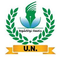
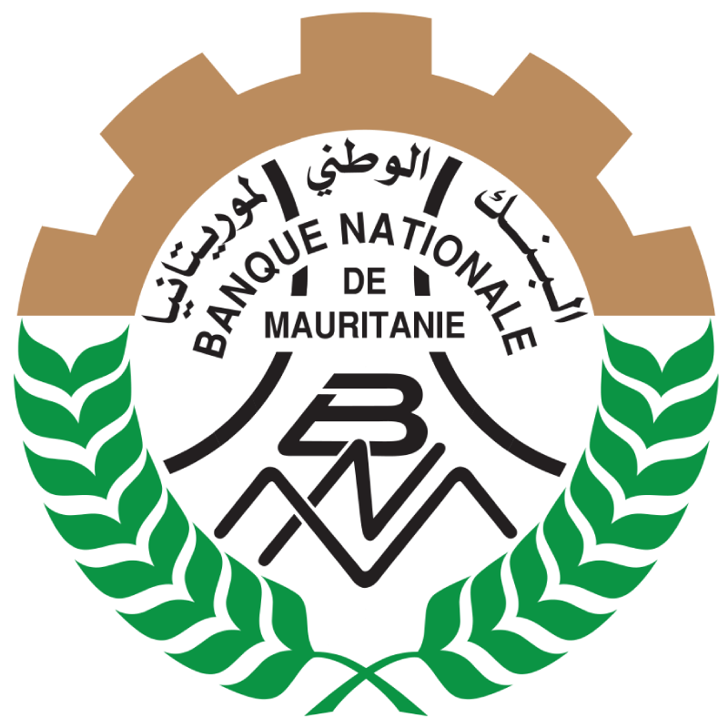

Cybersécurité
Tests d’intrusion, évaluation des vulnérabilités, reconnaissance, injection SQL, tests d’authentification, audit des mots de passe, IDS/IPS.
Passionné par la cybersécurité et la sécurité des réseaux, avec une expérience pratique en administration de pare-feu, protection des terminaux, évaluation des vulnérabilités, tests d’intrusion en laboratoire et environnements Linux.
Je suis étudiant en Master Réseaux et Systèmes Communicants à la Faculté des Sciences et Techniques (FST) de l’Université de Nouakchott. Je suis titulaire d’une Licence professionnelle en Développement et Administration des Applications Internet et Intranet (DAII), obtenue en 2026.
Mon parcours comprend deux stages en cybersécurité : à la Banque Nationale de Mauritanie (BNM) et chez NetworkWalks. Je m’intéresse à la sécurisation des réseaux et des systèmes d’information, à l’évaluation des vulnérabilités, à l’analyse des incidents et à l’amélioration continue des pratiques de sécurité.


Domaines techniques et outils issus de mon CV et de mes formations pratiques.
Tests d’intrusion, évaluation des vulnérabilités, reconnaissance, injection SQL, tests d’authentification, audit des mots de passe, IDS/IPS.
Supervision réseau, sécurité périmétrique, configuration des règles de pare-feu et protection des terminaux.
Fondamentaux réseau, adressage, sous-réseaux, routage, commutation et services réseau.
Environnements Linux et Windows, administration système et déploiement de laboratoires virtualisés.
Développement d’applications web, d’API et utilisation de frameworks applicatifs.
Exploration des workflows assistés par l’IA et de l’intégration d’outils pour l’apprentissage et l’évaluation en sécurité.
Formation et expériences présentées dans mon CV.
Formation de Master orientée vers les réseaux et les systèmes communicants.
Faculty of Sciences and Technology · Établissement of Nouakchott.
Projets académiques et travaux pratiques présentés dans mon CV.
Mise en œuvre d’une solution de sécurité réseau combinant détection/prévention d’intrusion et filtrage par pare-feu.
Déploiement d’un serveur SMB/Samba pour le partage de fichiers au sein d’un réseau local, avec une attention particulière à la sécurisation des accès.
Développement d’une plateforme e-commerce avec HTML, CSS, JavaScript et PHP, puis mise en œuvre avancée avec Magento.
Développement d’une application de gestion de comptes bancaires avec Spring Boot.
Développement d’une application de gestion des enseignants avec Flutter et un backend Flask.
Tests d’intrusion web en boîte noire dans des environnements autorisés : reconnaissance, évaluation des vulnérabilités et documentation des résultats.
Chaque carte ouvre une page dédiée avec le contexte, les objectifs, la méthodologie, les outils utilisés et des captures d’écran issues des dossiers de stage.
4 projets de stage disponibles.
Huawei ICT Academy · Attestation de fin de formation · 13 août 2026
Ouvrir le fichier de formation HCIA fourni >pwn.college · Badge de formation aux fondamentaux de la ligne de commande Linux.
Voir mon profile sur pwn.college >Cybersécurité internship completion certificate dated 29 September 2026.
Voir le certificat >Arabe Langue maternelle
Français Intermédiaire · B2
Anglais Intermédiaire · B1/B2
Pour toute opportunité de stage ou junior, collaboration ou discussion technique.